"Archive 2016-2017"
"Archive 2015-2014" "Archive 2013-2012" "Archive 2011"
"Archive 2010" "Archive 2009" "Archive 2008"
"Archive 2007-2006" "Archive 2005-2004" "Archive 2003"
These two try to act like they don't like
each other, but
now that I'm home all the time, I see what goes on.
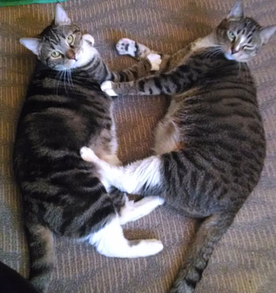
He "Wanna be startin' something..." but Lily is not interested.
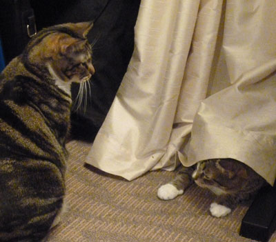
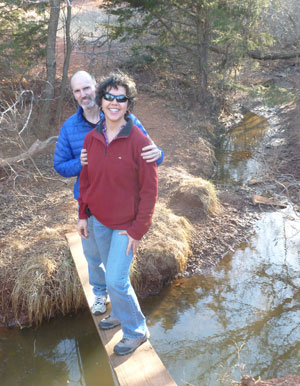
It looks like Eric is about to push me off!
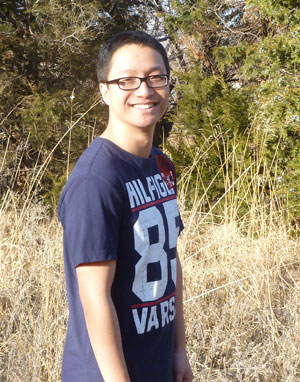
David is the only person who thinks I don't take enough pictures!
First Eric decided to do the dangerous thing...
under him! He did a great job of keeping his calm and
jumping to safety. That was a close one!
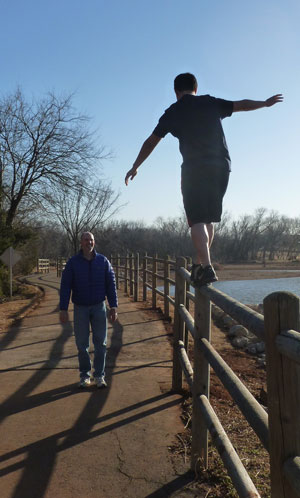
Eric and his Chinese gang enjoyed a
lovely Saturday in January
by hiking all over the Wichitas - with Simba, Rui, and Michael
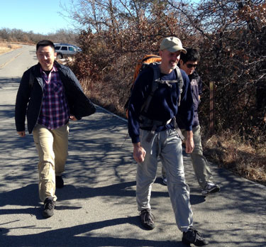
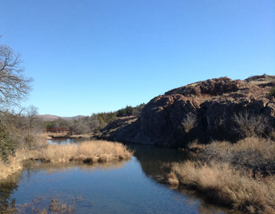
On the 17th we were blessed to host the All Nation's Church International Student Bible Study at our house.
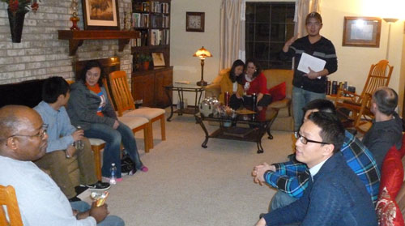
We joke that Rocket is Lily's mentor, but she really does seem to copy him down to the last detail.
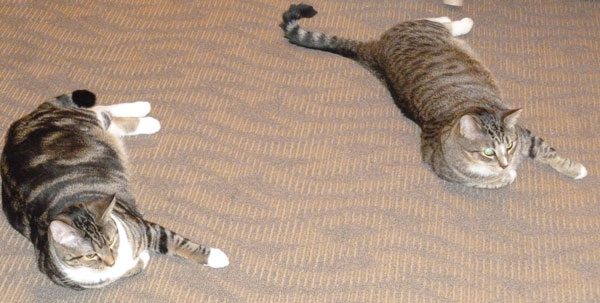
Our Christmas tree this year
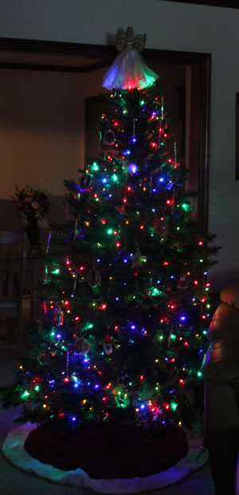
Brodie takes his imaginary driving very seriously
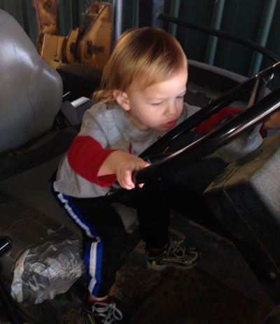
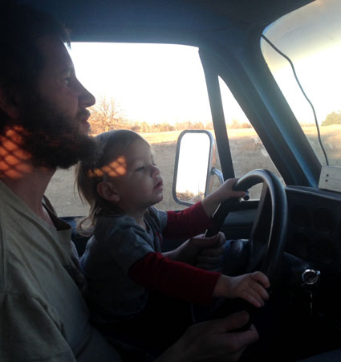
Below are some craft projects I made for Christmas
for Brodie & Mom. I've included a link to the book I
used in case any of my friends would like to make
some fun hats too.
Disclaimer: The link uses my Amazon associates
account so if you buy the book from this link I'll get
a tiny little percentage or something like that.
This was the dinosaur hat and backpack for Brodie
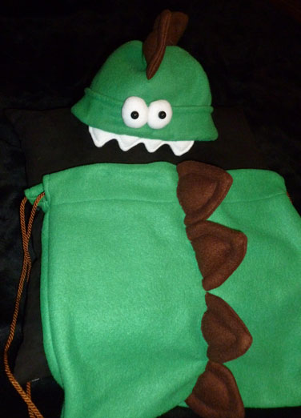
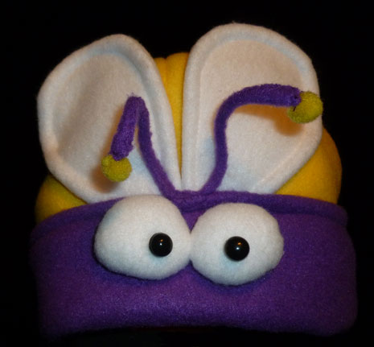
The whole family was going to get a hat, but lucky for them,
I ran out of time.
My good friends Rui and Rose got baptized in December - how awesome is that?!!!
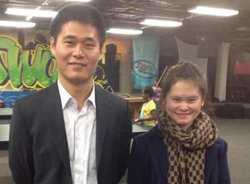
In early December, I was fortunate to be
able to see several of my good friends from AIS.
It was a treat to see them again!
Ron, Evonne, Noel, Mowen, & David
This is how Rocket helps me put up the Christmas tree.

This is how Lily gives her assistance.
And this is how sweet Feisty helps, by being her sweet self.
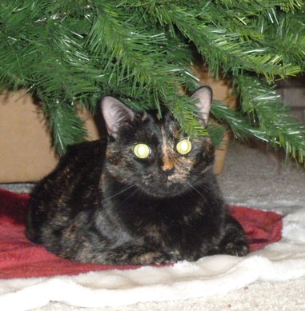
but she doesn't mind - she just flops down on them.
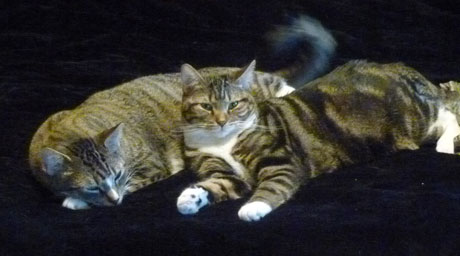
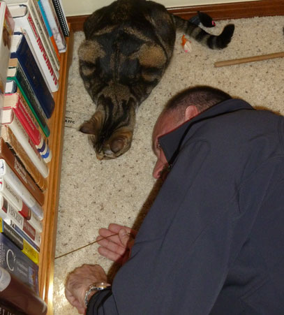
Here Lily gives much-needed supervision as Eric
rescues 8 of her rattle mice from under the bookcase.
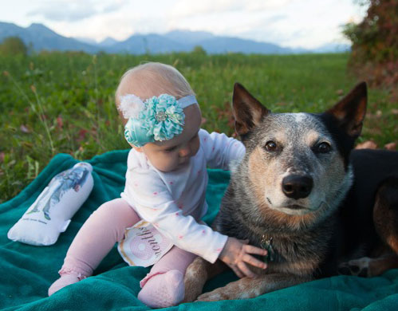
with Jess, the best climbing dog ever
and Serene's Daddy doll.
We sure miss our buddy Luc.
The Bloomer family pictures for Fall 2013 - awesome!
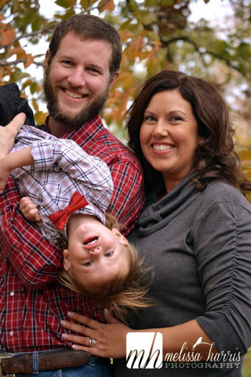
"a few" stuffed animals around when he has his milk.
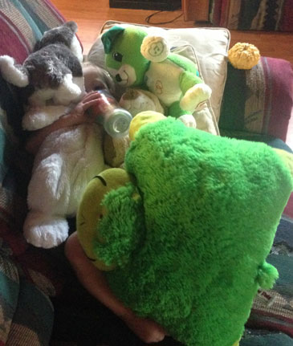
Woo Pig Sooie! Go Razorbacks!!!
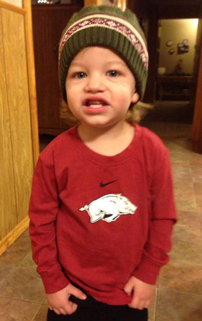
Westville High School, looking great for Veteran's Day. I love my school!
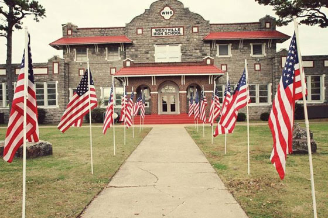
with Northwest Mandarin Church's
Thanksgiving dinner. Here Chunhai
and Bud tell a fun story.
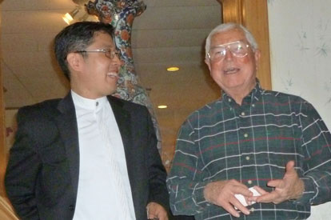
We are so proud of our friend Ellie - she was baptized this month!
Here we are at Ted & Judy's house enjoying a lovely lunch in her honor.
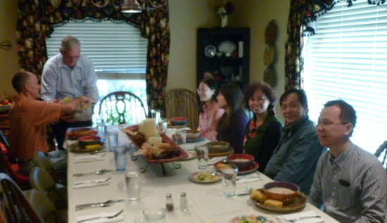
while doing CrossFit on October 29th.
After hobbling around on crutches for 10
days, he was able to get it fixed on November 7th.
He is much better now, thank you for your prayers!
Here he is pre-surgery, sporting his cap at a jaunty angle.
With our friends Wei, Isabel, and Jiayi on Halloween night.
What a beautiful family!!
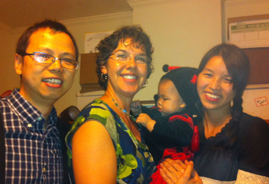
In early November, Eric and I visited
Wagon Creek Creamery
in northern Oklahoma.
They had so many cats, I thought I'd already gone to heaven!
It was such a nice place that even the cats and chickens were buddies.
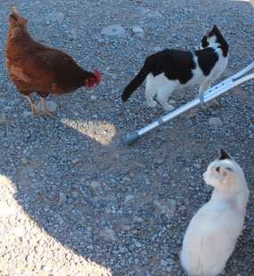
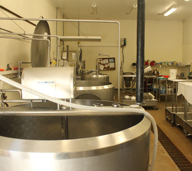
Inside the creamery - much tasty yogurt, butter, and cheese is created here.
Here, our large-butted Rocket imagines
that
he is still a small cat that would fit inside this box.
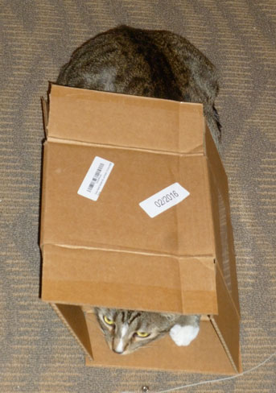
This is a picture of my Uncle Larry and
Aunt Glenda.
I think they were at a Doyle family reunion.
I love them and never get to see them, so I was
happy when Mom sent me this picture of them.
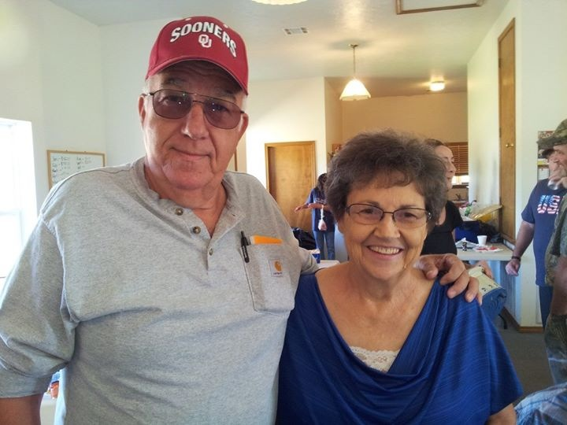
In early October, we were blessed by an
evening at the Clouse home.
They hosted a cookout to celebrate the completion of the post-tornado
repairs to their house.
They live very near the severe damage area, but their home was not hurt too
bad.
They fed us well and we had great company with our fellow Calvary Chapel-ites.
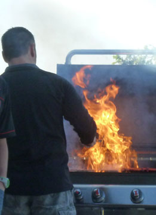
Greg, getting that flame-broiled goodness just right.
Roxie Clouse, up close and personal. (And cute!)
I moved a large flower pot and got quite a
surprise!
This black widow spider with six large egg sacs was living behind
there on the side of our house. I am usually terrified of
spiders,
so I can't believe I was able to make myself take pictures of her.
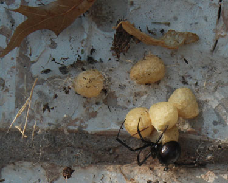
I spent a lovely evening with my Korean
friends Ellie and YangJi
at the Queen of Sheba Ethiopian restaurant in late September - yum!
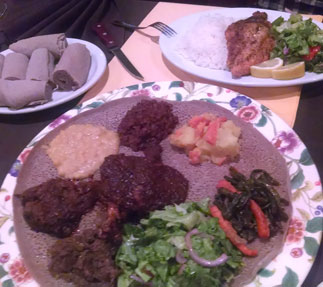
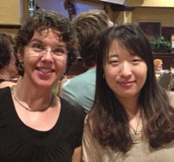
Me with Ellie
Me with YangJi
I went with Eric on an evening golf outing one
night,
serving as his paparazzi. It was a fun evening.
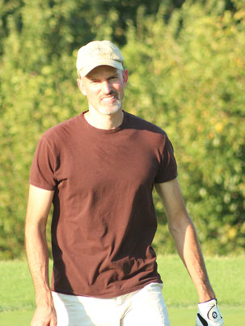
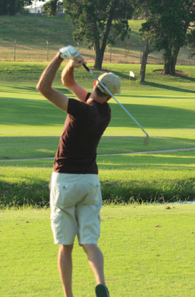
Here are some scenes from our walk
with Chunhai and Shasha at Lake Hefner.
We needed a walk because they fed us a huge, delicious meal.
好吃 - hăochī!
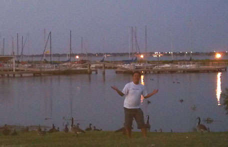
Ellie and I attended a "Women in the
Outdoors" event in early September.
Usually we do all the shooting activities, but this time we learned about
bug-out bags,
essential oils, and making our own lotions, soaps, and things. It was
a good day!
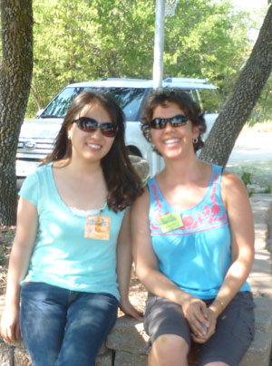
Here I attempted an upholstery recovering
project, which the internet assured me would be easy.
It actually wasn't too hard - and our dining room chairs look a lot less
disgusting now. Score!
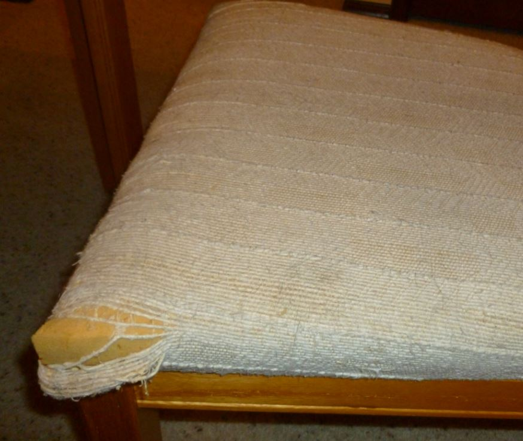
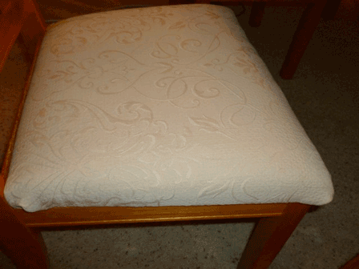
This is a project I'm particularly fond of. I took my most comfortable (and by far the ugliest) shoes I owned and "glammed" them up.
You can see my favorite Birkenstocks 'before' on the left - and 'after'
on the right.
Eric said, "I didn't think it was possible that those shoes could get
any uglier." What does he know?! I love them!!!
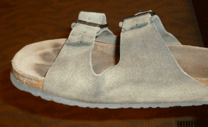
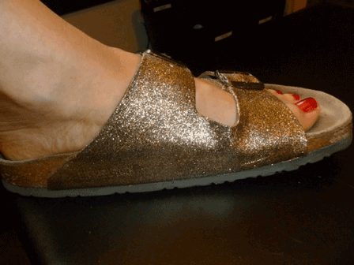
Desirae was in OKC for two nights in late August
We did a lot of shopping together, but also stopped by our
dear friends' house so that Desirae could meet Isabel.
This is Isabel, Jiayi, and Wei - what a wonderful family!
Gran and Desirae are both Scrabble Queens
but when I'm home for a visit, they let me play too.
This time I surprised everyone (including myself) with an 89 point
word!
It was "handouts" on a triple word score with the 50 point bonus
for a 7-letter word.
Once in a lifetime play!!
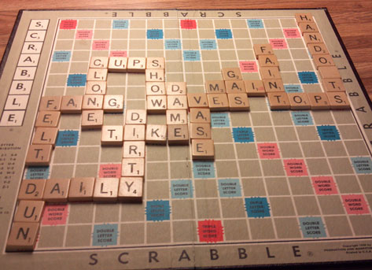
workin' out the next move
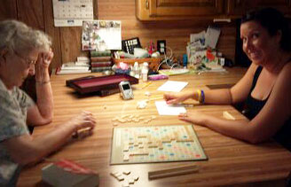
Here my Mom (AKA Brown Granny, or BG for short)
keeps Brodie entertained by letting him pop her gum bubbles.
He loved it, especially since he can say "Bubble" pretty well.
I thought this was such a cute picture.
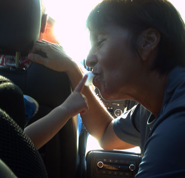
Scenes from when Brodie visited Mom &
Dad's
camp site at Lake Tenkiller in late July 2013
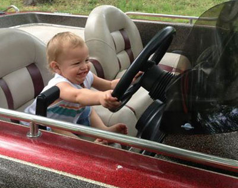
This boy is ready to drive the boat!
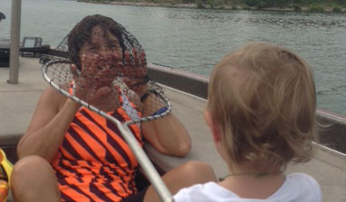
Now he's caught Brown Granny in his fishing net.
I think this is the best catch Grandpa has made. He's pretty proud!
Jiayi says that Eric is Isabel's older twin
brother
because they have the very same hair do
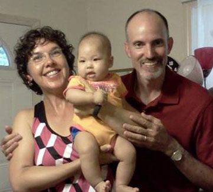
sweet sister Desirae at PF Chang's
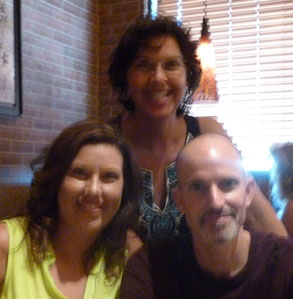
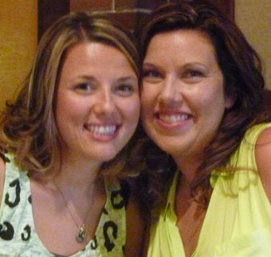
This picture cracks me up! Eric appears to have blue light emanating
from his ears and an alien dunce cap hovering above his head.
Classic!!
Hillsong concert with a group of friends.
Here I am with my good friend Jiayi.
Getting in the personal space of a flower.
Lucas and Kristi's boys Erik, Carter, Braden, and Cooper
Dillon Casazza - a fine young man,
finally captured on film in his graduation picture
Lily likes to cuddle, but Rocket thinks Lily is a crowd.
Notice that Rocket is between the two girls, Feisty is not
yet a fan of 'new girl' Lily
This is Lily's new thing - she likes
to look
out the window from this highly attractive pose.
Poor little Lily. She wants to love her sister Feisty, but Feisty
just really doesn't like her. This is how Lily "snuggles"
with Feisty -
notice she's using the mesh chair back as a safety screen!
Our Chinese teacher Jiayi now rewards us for
studying
hard by allowing us to visit her sweet daughter, Isabel.
I've only recently been healed of a lifelong fear of holding babies.
Here, Isabel says, "Whoa, is that Shawnna holding me? Yikes!!"
And here Isabel says,
"If you drop me I'm going punch you in the jaw!"
My beautiful friend Candice with her
beautiful daughter Marguerite on Easter Sunday 2013
at our church, Calvary
Chapel of OKC
Archer Eric at Heartland Outdoors in Edmond
My sweet sister has loaned me her bow so we went
shooting together one lovely Saturday. I have a lot to learn.
Shawnna's nephew Brodie celebrating
his 1st birthday with his own cake.
Looks like some of it may have made it into his mouth!
A dish of hundred-year egg with chilled tofu.
I liked it, but I don't think Eric ventured to try it. J
Eric with Ray, Simba, and Tracy
Now it's my turn to be in the picture - fun evening!
We were at the weekly Baptist Collegiate Ministry
luncheon for International Students
Mom sent this lovely picture of my high school in Westville
These are scenes from a photo shoot I did with Lily - practicing with my new camera.
She's a great subject!

We do however, need to speak to her
about sitting in a more lady-like fashion.
we were blessed to celebrate it with him.
Here, Eric amuses Tom with his witty jokes.
Me, with my good friend K.
It was so nice to see her again!
Ellie & I after a nice Thai lunch -
we enjoyed a great afternoon of catching up
Blackmon estate in southeast OKC. It's beautiful!!
Here Rusty greets us as we come down the drive.
Gunner is very pleased with attention of any sort.
In January 2013 we attended the Global
Impact conference
at NW Baptist Church in OKC. As part of that, we hosted one
of the out of town guests - a wonderful young man named Louis.
Here Eric treats Louis to an American breakfast of sausage,
OJ, eggs, and Cream of Wheat. I don't think he was a big fan
but he ate it with a smile on his face.
Here Eric is teaching Louis how to draw a compound bow.
Exciting!
prepared for us one evening at Chunhai's house
And another feast, this one courtesy of our
friend Simba at Feng's Kitchen
junk that gets in the way of making the perfect napping spot.
All those electronics kick out some nap-inducing heat!
Feisty has an intensity that's hard to match.
Rocket is enjoying "hiding" under this large sheet of paper.
However, he is unaware that his tail is hanging out a tear in the paper.
Lily soon made him aware of this fact with a giant pounce.
Ellie & I enjoyed a lovely lunch at Matthew
Kenny (105 Degrees)
in December, to exchange gifts and celebrate our birthdays a little early
How adorable is Lily as a Christmas tree ornament?!
Our big cats have been far more patient with her
than I dreamed they could be. Here, Rocket pins
her down in hope of keeping her still for a minute.
Scene from an afternoon exploring around the Devon Tower. It is very pretty.
In all the others she was moving so fast she was blurry.
Brodie is dishing out the love whether
Gran is ready for it or not!
Notice his grip on her glasses.
Dad giving Waldo some well-deserved
belly scratches.
(Just ask her, she'll tell you she deserves that!)
Lena, Candice, Eli, and soon-to-arrive
Marguerite at Candice's baby shower.
It was held at our church, Calvary Chapel OKC.
A scene from a fun evening of sushi and yogurt with my friend Shasha
My view of a Redhawks game during an AIS Business Services team outing.
Our seats were actually on the first row but that was just too close for a slow-reflexes person like me.
A fun weekend in Westville with Mom, Dad, Desirae, Brodie, and Gran.
Here Brodie shows off with a session of "speed
rolling."
He must have rolled the length of that quilt about 12 times - it was
hilarious!
His favorite thing is to ride in the trail wagon.
Here he gets his Mom and Grandma to take him on an early Sunday drive.
Now he stares at the trail wagon in disbelief.
He cannot believe they would drive it without him.
Ally, Emily, and Shawn.
They will return to Korea very soon.
Ally has cooked many wonderful Korean meals
for me over the past two years. She's a great cook!
Here, Feisty tries to explain how
the roll of
paper towels just kind of exploded all by itself.
I'm not in trouble, am I??
My sink is clogged - call the plumber!
Here he says, "You may push my chair slowly."
could work from home after surgery.
Feisty took over for me when I had to go change my ice packs.
held at Lake Arcadia each year.
Large block of frozen hot dogs -
looks appetizing, doesn't it?
Here, Ray shows off his skills at being onery.
Shortly after this, he returned her to her father - face-first.
Four Generations of Mortons
I think you will agree, I have the
cutest nephew EVER.
Welcome to the gun show!
Yeah, I've got it good!
An evening of hail in late May
Mom was able to run the OKC Memorial
Marathon's
half marathon again this year.
She did great at 2:21 and was hardly sore at all afterward.
Here we are with Mom after the race.
She is not in jail, she's in the runners-only food area.
Levita & Mom after the race, they were in great shape.
My cats must know how much I like symmetry.
This spot on top of the cabinets is the prime
sleeping spot for our cats.
However, they each prefer to be the only one in it. Here they have
a
battle of wills - each wants the other to scram.
We visited the Bloomers in early March
so that Eric could meet Brodie.
Here you see their first introduction, and the difficult adjustment for the
other "kids" to the new guy on the block.
Exciting - Dan & company are building the
barn on the "ES Ranch" in Eureka, MT
This thing should still be standing for generations after we're gone, they
did a great job on it.
My good friend Eron and I attended a
concert of Mandisa & Laura Story in March.
It was a great concert and it was wonderful to spend time with Eron
again.
And yes, I know I look psycho in this picture, I don't know why my eyes
go all crazy like that
but I hope it's only in pictures and not in real life!
Mom and Linda were in town in February
for Encyclomedia and I got
to spend two nights with them. Here we are having dinner with Ellie at
Pei Wei.
She loves sacking out on the warm 'fresh out of
the dryer' clothes.
So when you see me wearing clothes covered in cat hair, it doesn't mean I
didn't wash them!
Smashing his face on the door jam must feel comfortable to him.
Now here we have a pair who know how to relax properly!
They are wedged into a sunny spot between the window and the love seat.
Great napping was had by all.
In January I spent a fun day with my friends Ally,
Emily, and Sean.
We started the day by watching Sean play a basketball game.
Watching 5 year olds play b-ball was more entertaining than an NBA
game!
A lovely Korean meal prepared by Ally.
"Archive 2015-2014" "Archive 2013-2012" "Archive 2011"
"Archive 2010" "Archive 2009" "Archive 2008"
"Archive 2007-2006" "Archive 2005-2004" "Archive 2003"